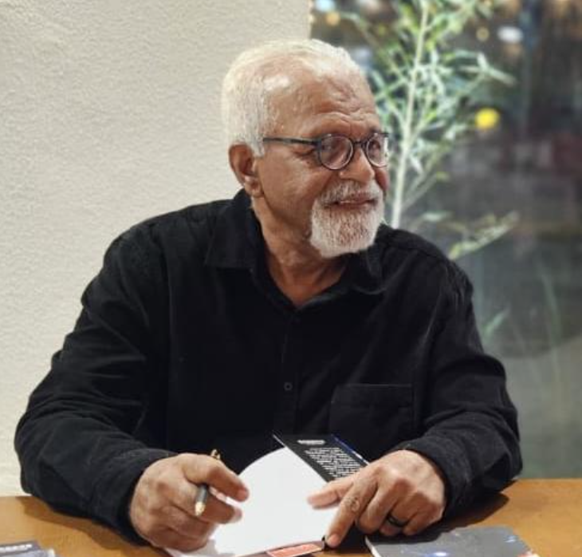

Venha para o melhor, você merece. Sua mente em boas mãos!
Venha para o melhor, você merece. Sua mente em boas mãos!
Acolhemos e cuidamos pacientes com: Depressão, ansiedade, dependência química, bipolaridade, borderline, esquizofrenia, TOC, transtorno esquizoide, TEA, Transtornos alimentares, estresse pós traumático, entre outros. Público alvo: Crianças, adultos e idosos. Forma de atendimento: Presencial e online.

Psicólogo clínico
Gerontólogo
Neuropsicólogo
CRP 02/22848
Psicóloga clínica
Psicóloga social
CRP 02/5379